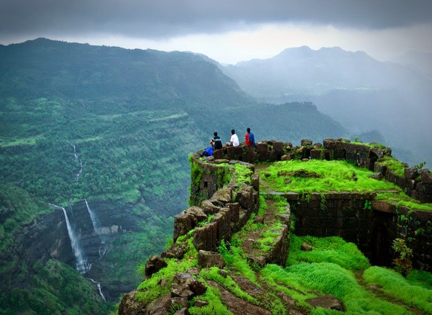

Sindhudurg
The fort Sindhudurg is on an island off the coast of Malvan town in the Sindhudurg district of the Konkan region of Maharashtra State. This fort is protected monument by the Centrak Government of India."Click to know more"
Pratapgad
Pratapgad fort is a huge mountain fort situated in satara district of Maharashtra state. The fort is enriched by dense forest and hills too. It disregards the ways connecting the Deccan Plateau with Konkan."Click to know more"

Shivneri
Shivneri is the birthplace of Chhatrapati Shivaji Maharaj. It is near the historic city of Junnar. Shivneri Fort is one of the prime historical and tourist attractions of Maharashtra. "Click to know more"
